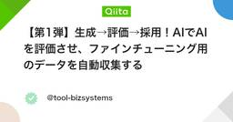

機械学習タグが付けられた新着記事 - Qiita
https://qiita.com/tags/機械学習
機械学習に関する情報が集まっています。現在16054件の記事があります。また9434人のユーザーが機械学習タグをフォローしています。
フィード
【技術解説】クオンツ分析をPythonで！センチメント分析を利用した金融データ予測の新アプローチ
機械学習タグが付けられた新着記事 - Qiita
クオンツ分析をPythonで！センチメント分析を利用した金融データ予測の新アプローチ本記事では、データサイエンスと機械学習技術を駆使して、センチメント分析を用いたクオンツ分析の手法を解説します。特に、Pythonを使用して金融データの予測精度を向上させる方法に焦点を当て...
4時間前
JAX で学習した Transformer の重みを PyTorch に移植する
機械学習タグが付けられた新着記事 - Qiita
はじめに前回、このような記事を書きました。JAX は、rollout のような処理をまとめてコンパイル・ベクトル化できるため、大量のシミュレーションを回す場面と相性がいいです。一方、既存の推論コードや提出環境が PyTorch で書かれている場合、学習部分だけを...
13時間前

【第1弾】生成→評価→採用！AIでAIを評価させ、ファインチューニング用のデータを自動収集する
機械学習タグが付けられた新着記事 - Qiita
1. はじめに今回は、1Bクラスの軽量ローカルLLM「Llama 3.2 1B-Instruct」を、より自然な文章を生成できるモデルへ育てるための実験を始めます。まずはファインチューニング……の前に、学習に使うデータをどう集めるかが問題になります。そこで今回は、L...
17時間前
画像を1枚ずつラベル付けするのがつらくて、まとめて確認できるツールを作った
機械学習タグが付けられた新着記事 - Qiita
画像を分類する仕組みを作ろうとしたとき、先に音を上げたのは学習ではなく、ラベルを付ける作業でした。似た写真を1枚ずつ開いては、同じ値を選ぶ。何枚か進めるうちに、「これ、まとめて付けられないかな」と思うようになりました。私が手元で繰り返したかったのは、自分で決めた分類軸を...
17時間前